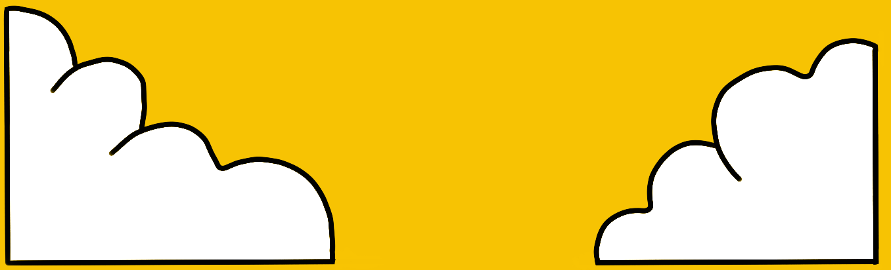

Inicio
Sobre mi
Proyectos
Hobbies
Teoría
Proyectos
Proyectos
Descripción
Gestión de restaurantes
Este sistema buscaba manejar de una forma ordenada las actividades de un restaurante.
Suoer Mario
Este proyecto fue una réplica del juego Super Mario World de Nintendo (8bit) hecho en C++.
